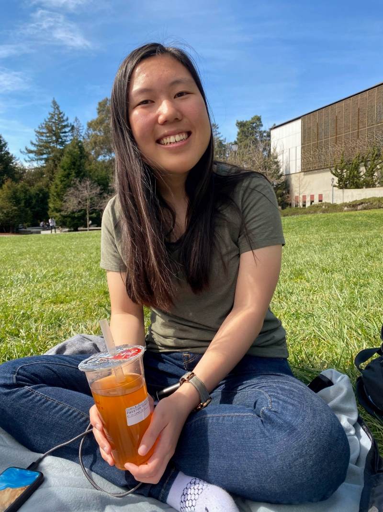

I’m currently a senior at UC Berkeley, where I engage with the design community and study computer science.
For a quick rundown of my work, here is my resume. Reach out to me at heidid@berkeley.edu.
I have experience with...
- frontend engineering, mostly in React. For Summer 2020, I’m lucky to be interning with The New York Times, working on NYT Cooking!
- thinking about design systems, from my past internship at Flexport.
- the human-centered design process, having worked on product design for clients through Berkeley Innovation.
- teaching web design and development to 100+ students every week, as a previous instructor of the Web Design DeCal (CS 198).
I’m currently trying to get better at...
- graphic design and illustration, by creating outreach materials for UC Berkeley’s Information Security Office.
In the future, I think I would enjoy working on...
- design education. Right now, I’m helping the team behind Innovative Designers of Tomorrow, where we’re developing a curriculum for high school students.
- interactive storytelling, and use my technical skills for more creative forms.
- human-computer interaction research, to explore and critique the experiences we can facilitate with technology and new media.
Thanks to the classes I’ve taken at Berkeley, I want to learn more about...
- urban design and landscape architecture, with an emphasis on the social and cultural factors behind them.
- improving food security and accessibility. Taking Art 160 really opened my eyes to these issues, especially among students.
- letterpress printing! It’s a beautiful art.
- prototyping with electronics, which I’ve done a bit of with Arduino.
- 3D modeling, since I’m so used to working in 2D space.